자기소개
지난 3개월간 AI 코딩 에이전트(Gemini, Cursor 등)의 도움을 받아 Aether AI라는 AI 기반 창작 플랫폼을 만들어보았습니다. AI가 생성한 코드를 그대로 쓰기보다는, 설계 → 토론 → 구현 → 검증이라는 사이클을 지키려고 노력했습니다. 아직 배울 것이 많지만, 이 과정에서 얻은 경험을 정리했습니다.
이력 요약
학력, 경력, 활동 및 자격사항을 정리했습니다.
🎓 학력
전주대학교(4년제) · 산업공학과
2020.03 ~ 2027.02 (졸업예정)📄 SCI 논문 2저자
"Eye-Blink and SSVEP-Based Selective Attention Interface for XR User Authentication: An Explainable Neural Decoding and Machine Learning Approach to Reducing Visual Fatigue"
→ 기여: 데이터 전처리, 실험, 논문 Figure 시각화
🎯 캡스톤디자인: 수면 상태 감지 기반 IoT 자동 제어 시스템 (카메라 센싱 → 수면감지 → 홈 스마트 IoT 제어) ⌨ GitHub
캡스톤 데모 — 웹캠 수면 감지 → IoT 조명 자동 제어
💼 경력 총 3년
에스케이넥실리스(주) 정읍공장
2022.01 ~ 2023.01 (1년)박막연구소 · 실험보조 — 연구개발 지원, Lab. 평가 및 분석, 개발품 품질 검사
성과: 5G 소재 개발 기여
솔레니스코리아
2018.09 ~ 2020.12 (2년 3개월)기술지원팀 · 공정엔지니어 — 공정 데이터 분석(pH, ORP 등), 약품 투입 최적화, 설비 관리
성과: 약품 투입 최적화로 비용 절감 · 2개 공정 최적화 모델 적용 · 공정 안정성 극대화
🚀 주요 활동 & 프로젝트
🏢 국민연금공단 — RAG LLM 프론트엔드 개발
2026.01 ~ 2026.02내부 업무 효율화를 위한 RAG LLM 시스템의 프론트엔드 UI/UX 설계(Figma) 및 구현을 담당했습니다. 백엔드 RAG API 연동 테스트도 수행했습니다.
Chat NPS — 국민연금공단 업무 지원 AI 챗봇 (Figma 디자인)
🌾 농업 AI 진단 시스템 — UI/UX 디자인
Figma Design실시간 농산물 시세(KAMIS 연동) 및 AI 기반 작물 병충해 진단 서비스. 농업 달력, 병해충 경보, 지역 정보 등 통합 대시보드.
농업 AI 진단 시스템 — 실시간 시세 · 병충해 경보 · 작물 선택 (Figma 디자인)
📊 로글리(Logly) — 딥워크 생산성 추적 앱
Desktop App딥워크 마인드맵 시각화, 포모도로 타이머, 24시간 몰입 흐름 분석, To-Do 리스트, 일일 회고 기능을 갖춘 개인 생산성 데스크탑 앱.
로글리 MVP 데모 — 딥워크 마인드맵 · 포모도로 · 몰입 분석
📄 SCI 논문 2저자 참여
2025"Eye-Blink and SSVEP-Based Selective Attention Interface for XR User Authentication"
기여: 데이터 전처리, 실험 수행, 논문 Figure 시각화
🥽 호남ICT이노베이션스퀘어 — XR 사용자 인증
2025.03 ~ 2025.12Meta Quest Pro 실시간 동공 추적 · Unity APP 개발 · 전주 ICT 공모전 우수상
📜 자격 & 수상
🪖 병역: 육군 병장 만기전역 (2023.07 ~ 2025.01)
Aether AI
장편 웹소설 작가를 위한 100% 로컬 기반 AI 창작 스튜디오
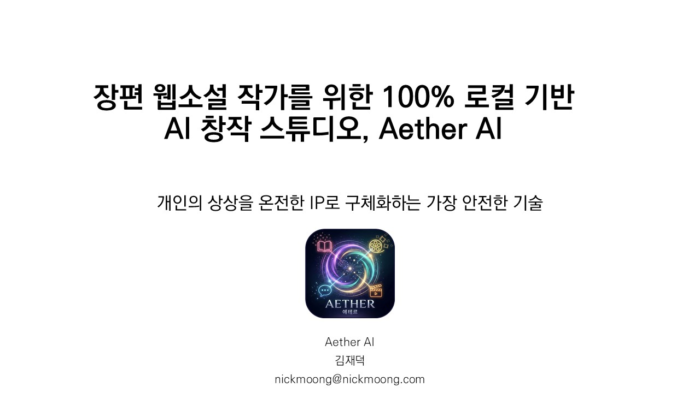
Offline-First
모든 AI 연산을 로컬(Ollama)에서 처리. 원고 유출 원천 차단
Cloud Optional
PC 사양 한계 시 Azure OpenAI / Gemini API 크레딧 보완
영구 소유
구독 없이 도구와 원고를 영원히 소유. ₩89,000 일시불
문제 정의 & 솔루션
창작자가 겪는 어려움을 나름대로 기술적으로 풀어보려 했습니다.
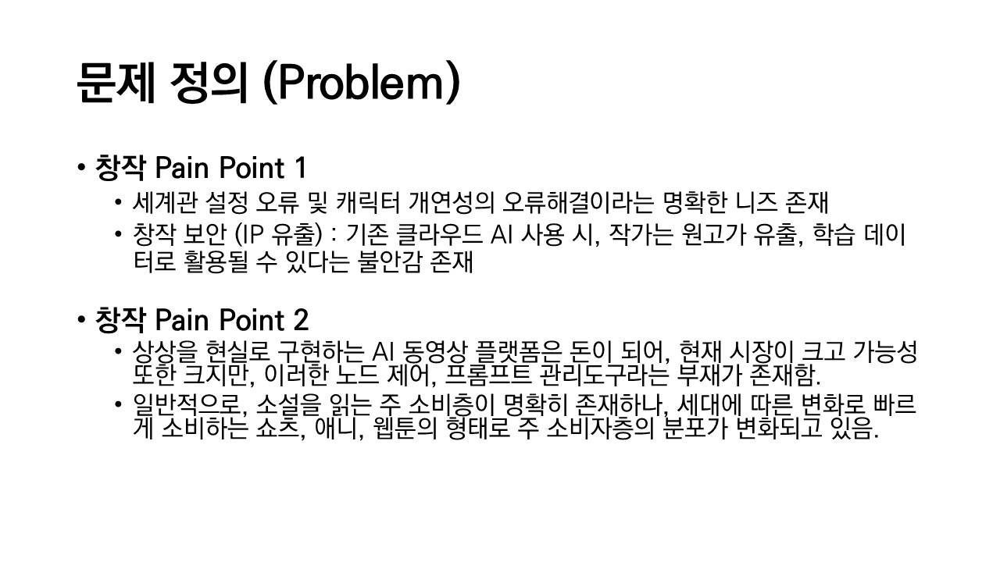
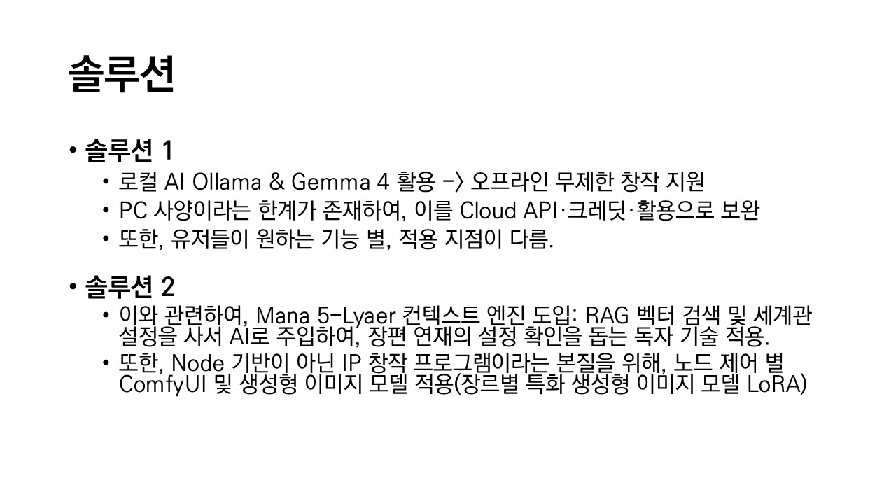
| Pain Point | 솔루션 | 기술 |
|---|---|---|
| 세계관 설정 충돌 · 캐릭터 개연성 오류 | Mana 5-Layer 컨텍스트 엔진 | RAG |
| 클라우드 AI 사용 시 원고(IP) 유출 불안 | 로컬 AI (Ollama + Gemma 4) | Offline-First |
| IP 확장 시 노드 제어 도구 부재 | ComfyUI 이미지 생성 파이프라인 | LoRA + 4K |
얼리버드 전량 Sold Out
30석 + 10석 + 10석 조기 매진
커뮤니티 운영
업데이트 25건 · 공유 60회 · 팔로워 67명
리워드 배송 완료
2026.05.17 전원 전달 완료
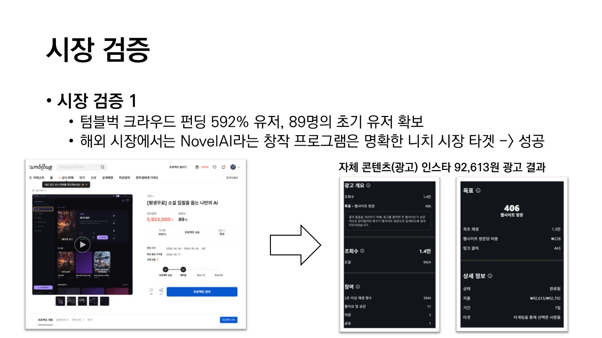
"이 앱은 매우 비전이 있다고 생각합니다. 창작자분께서 열정적으로 지속적인 수정과 추가를 해주시고 계십니다. 추후 추가 펀딩이 진행된다면, 범용성 높은 창작 앱이 될 것이라고 예상합니다."
👍 좋아요 4 · 텀블벅 리뷰
캠페인 타임라인
기획 → 개발 → 마케팅 → 배포 → CS까지 제품의 전 생명주기를 1인으로 경험했습니다. 인스타그램 자체 광고(₩92,613 투입 → 406회 웹사이트 방문, 1.4만 조회)도 직접 운영했습니다.
기술 스택 & 아키텍처
프론트엔드부터 AI 파이프라인, 클라우드 인프라까지.
aether-ai/ ├── app/ │ ├── electron/ # Main — IPC, 프로세스 오케스트레이션 │ │ ├── main.js # 앱 라이프사이클 + FastAPI/Ollama 관리 │ │ ├── preload.js # 보안 브릿지 (Context Isolation) │ │ └── handlers/ # IPC 핸들러 (setup, backup) │ └── renderer/src/ # React 프론트엔드 │ ├── features/ # Thin View / Fat Logic 패턴 │ ├── stores/ # Zustand 글로벌 상태 │ └── hooks/ # useLLM, useLoreLibrarian, useAutoHarvest ├── backend/ # Python FastAPI │ ├── orchestrator.py # RAG → Prompt → LLM 워크플로우 │ ├── context_builder.py # Mana 5계층 컨텍스트 엔진 │ └── vector_store.py # SQLite 벡터 스토어 └── scripts/ # harness.ps1 자동화 검증
📐 Thin View / Fat Logic
UI 300줄 이하 · 로직은 Hook 분리
📜 Spec-Driven Dev
SPEC.md 합의 후 코드 변경
🧪 Harness Engineering
변경 후 자동화 검증 필수
AI 기반 개발 워크플로우
Claude / Gemini 에이전트와의 실제 협업 과정 — 문제 정의 → 의사결정 → 구현 → 검증
Aether AI를 개발하면서 Claude Opus 4.6과 Gemini를 적극 활용했습니다. SPEC.md에 요구사항을 먼저 정리하고, AI와 설계를 논의한 뒤, 구현 후 harness.ps1로 검증하는 흐름을 유지하려고 노력했습니다. MCP 서버(aetherMCPServer.ts)도 구현해 보면서 Claude Desktop 연동 경험을 쌓았습니다.
Spec-Driven Development — 요구사항 → 제품 사양 변환
모든 기능 개발은 SPEC.md에 변경 사항의 명세를 먼저 작성하고, 합의 후 구현합니다. 바이브 코딩 금지.
SPEC.md · PRD.md · FEATURE_SPEC.md · AUF_SPEC.md · 실행계획 4건
로어 사서 RAG 파이프라인 설계
harness.ps1 자동화 검증 통과. Vitest 73개 테스트 케이스 전체 패스. 백과사전 DB 기반 컨텍스트 주입으로 설정 충돌 방지 실증.Electron IPC 스트리밍 병목 해결
requestAnimationFrame 배치 렌더링 + 완료 시점에만 Store 커밋.MCP 서버 구현 — Claude Desktop 연동
@modelcontextprotocol/sdk 사용.aetherMCPServer.ts — ListPrompts, GetPrompt, ListTools, CallTool 4개 핸들러 구현. 로컬 파일시스템에서 커스텀 봇(Gems)을 읽어와 MCP 표준 프롬프트로 자동 배포. Claude Desktop에서 Aether 세계관 설정 호출 검증 완료.결과물 스크린샷
텀블벅 상세 페이지에 게시된 실제 제품 UI 및 자동화 테스트 캡쳐.
📱 텀블벅 게시 제품 UI
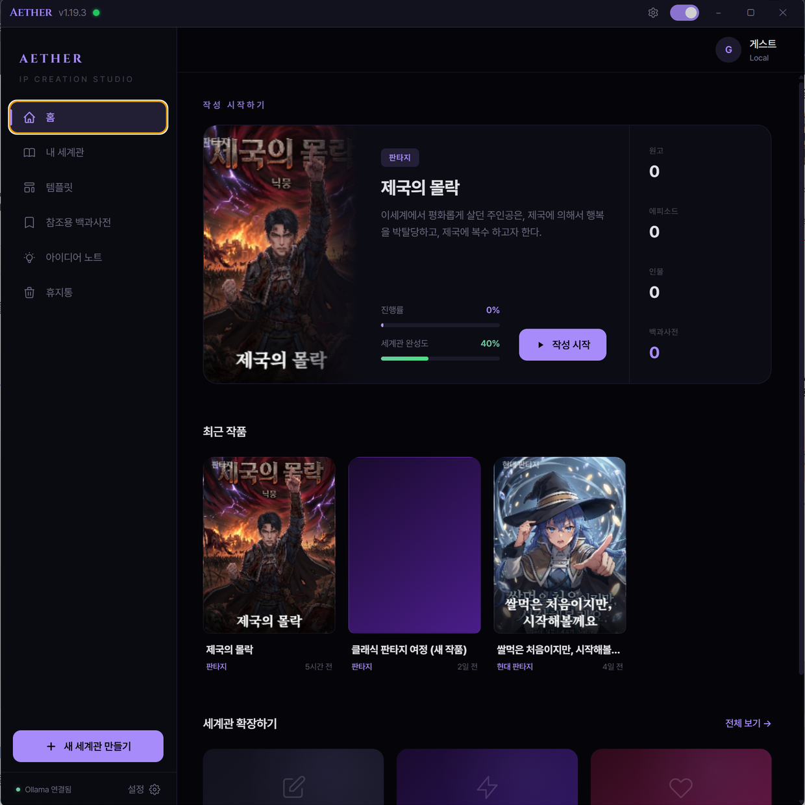
홈 대시보드 — 프로젝트 관리 · 진행률 · 백과사전
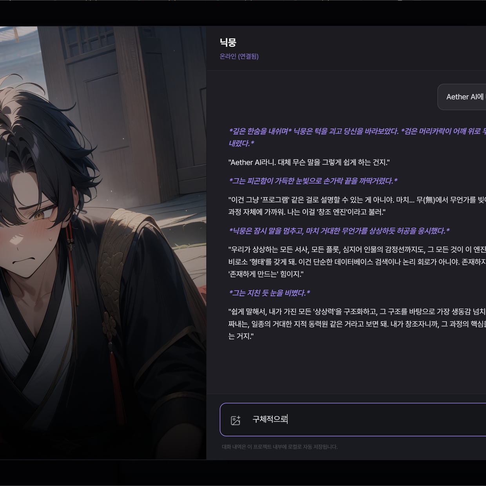
AI 에이전트 채팅 — 캐릭터 대화형 인터랙션
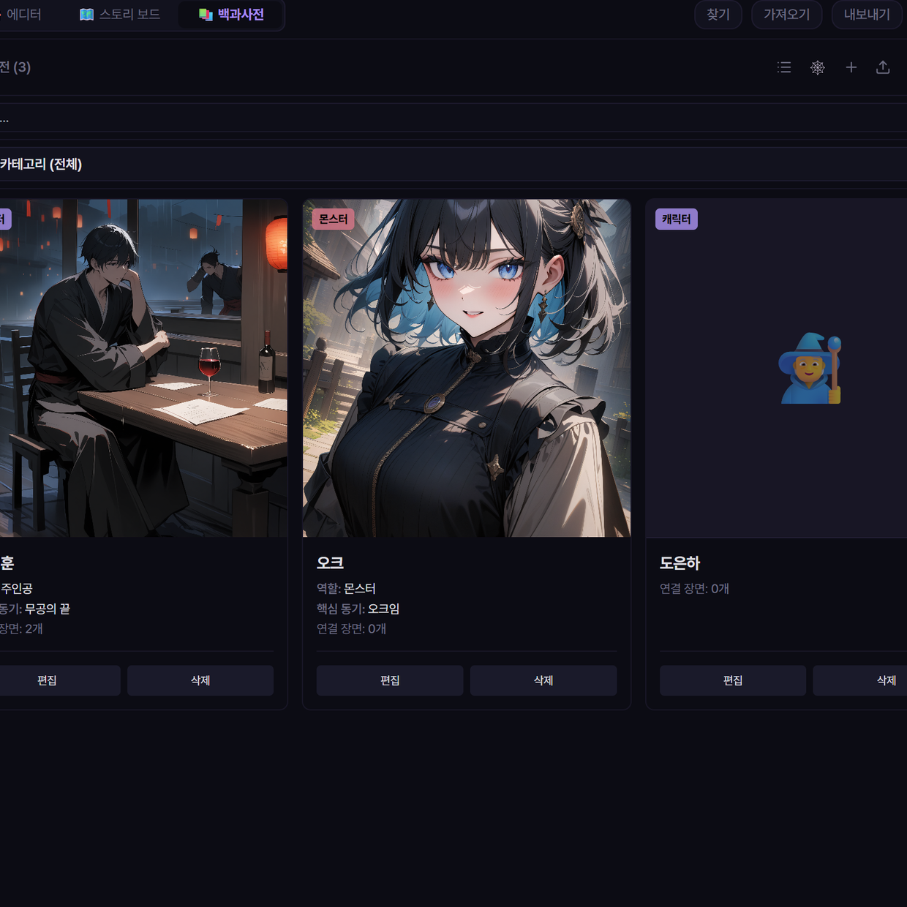
백과사전 — AI 생성 캐릭터 · 역할/동기 연결
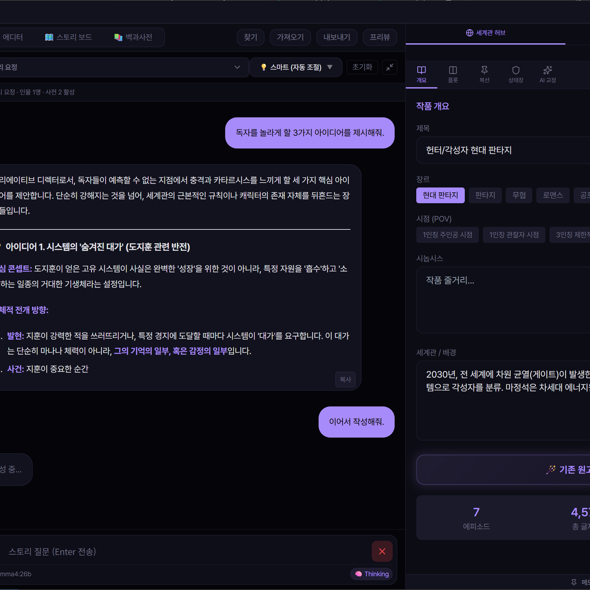
에디터 + 세계관 허브 — 장르 · 시점 · 시놉시스
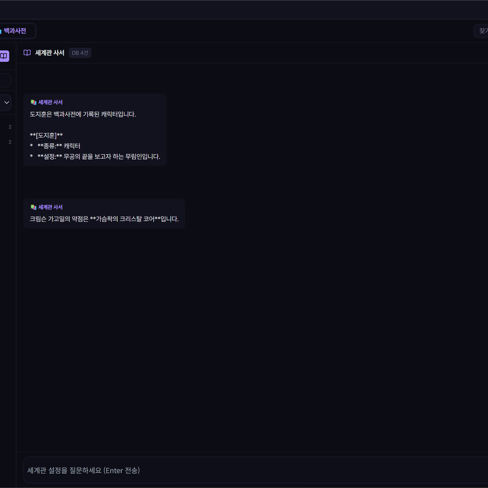
로어 사서 AI — 백과사전 DB 기반 실시간 질의응답 (RAG)
🧪 자동화 QA 테스트
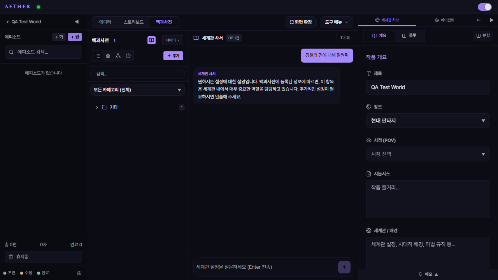
QA #1 — 백과사전 & 사서 AI 연동
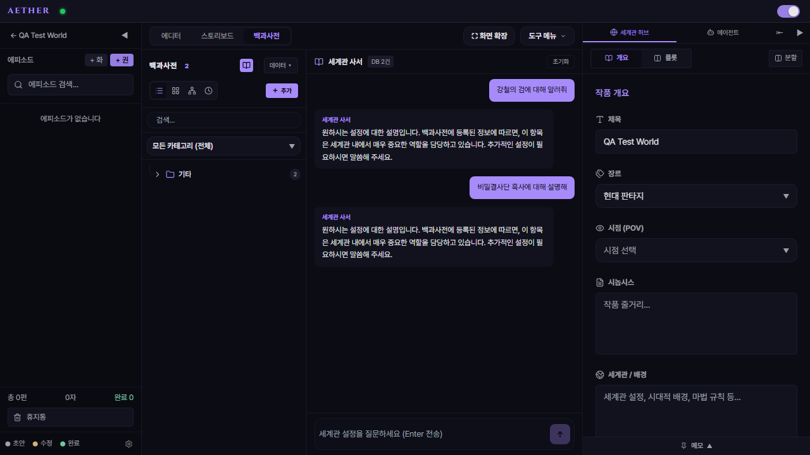
QA #2 — AI 사서 실시간 질의응답
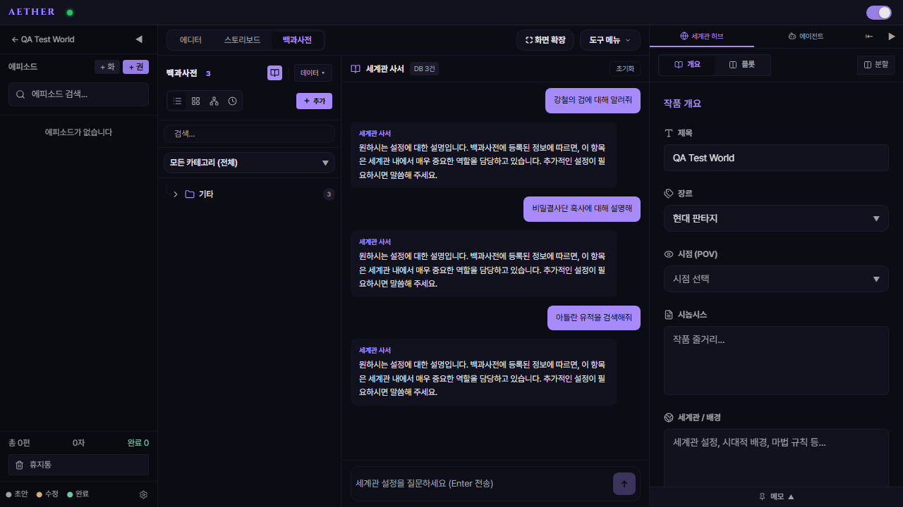
QA #3 — 다중 백과사전 항목 관리
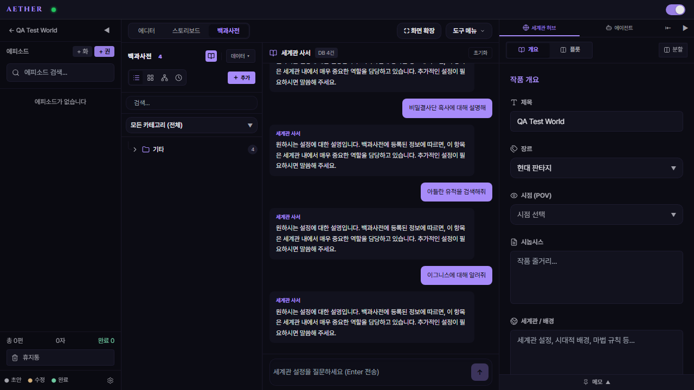
QA #4 — 캐릭터/규칙/세력 분류
보유 역량 요약
기획 → 디자인 → 개발 → 클라우드 배포까지 제품의 전 주기.
☁️ 클라우드 & 인프라
Azure OpenAI 프로덕션 서빙
Azure Blob 스냅샷 동기화 (SAS)
클라우드/로컬 하이브리드 설계
🤖 AI 에이전트
RAG 사서 에이전트 구현
ComfyUI 4K 이미지 파이프라인
LLM 스트리밍 멀티 프로바이더
🎨 UI/UX & 프론트엔드
Figma 디자인 시스템 구축
React 18 + Zustand 프론트엔드
Electron 패키징 (NSIS/MSIX)
💻 백엔드 & 시스템
FastAPI REST API 설계
SQLite/pgvector 벡터 검색
Electron IPC 최적화
왜 (주)비아인가
채용공고의 요구사항과 제 경험이 어떻게 연결되는지 정리해 보았습니다.
| 비아 채용 요구사항 | 관련된 저의 경험 |
|---|---|
| Claude 기반 개발 워크플로우 Claude Code, Claude API 숙련도 |
Claude Opus 4.6으로 실제 상용 제품 개발 (텀블벅 게시). MCP 서버(aetherMCPServer.ts) 직접 구현하여 Claude Desktop 연동. Gemini 에이전트 병행 사용. |
| 요구사항 → 제품 사양 변환 독립적 사양 정의 → 실행 가능한 계획 |
Spec-Driven Development: SPEC.md(User Story) → PRD.md(23K) → FEATURE_SPEC.md(22K) → 실행계획 4건. Vibe coding 금지 정책 운용. |
| 구현 → 테스트 → 운영 전 과정 전 과정에 대한 책임 및 관리 |
SPEC.md 작성 → 코드 구현 → harness.ps1 자동화 검증(Vitest 73개) → 텀블벅 89명 배포 → Auto-Update 패치 → CS 운영. 전 과정 1인 수행. |
| 기술적 깊이 + 제품 개발 능력 핵심 신호 |
RAG 파이프라인 · MCP 서버 · IPC 최적화 등 기술적 깊이 + 텀블벅 592% · 인스타 자체 광고 운영 등 제품 시장 검증 경험. |
비아가 요구하시는 "문제 정의 → 의사 결정 기준 → 구현/검증 결과" 패턴을 저도 Spec-Driven Development라는 이름으로 실천해 왔습니다. 아직 부족한 부분이 많지만, AI와 함께 설계하고 직접 시장에 내놓아 텀블벅 592% 달성이라는 결과를 얻을 수 있었습니다. 이 경험을 바탕으로 비아에서 더 성장하고 싶습니다.